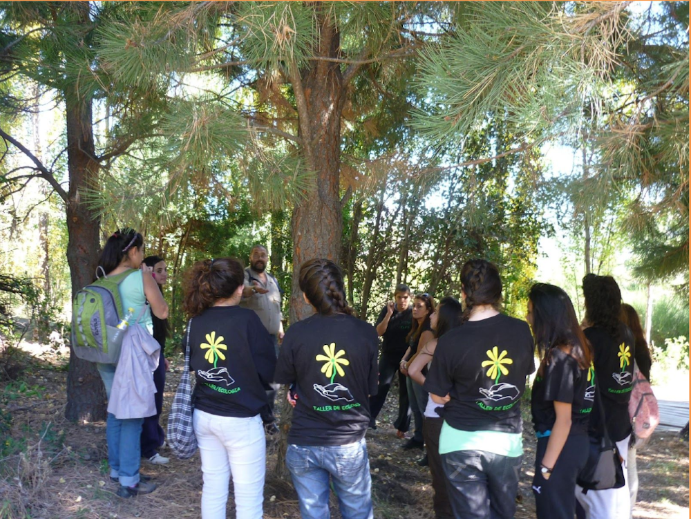
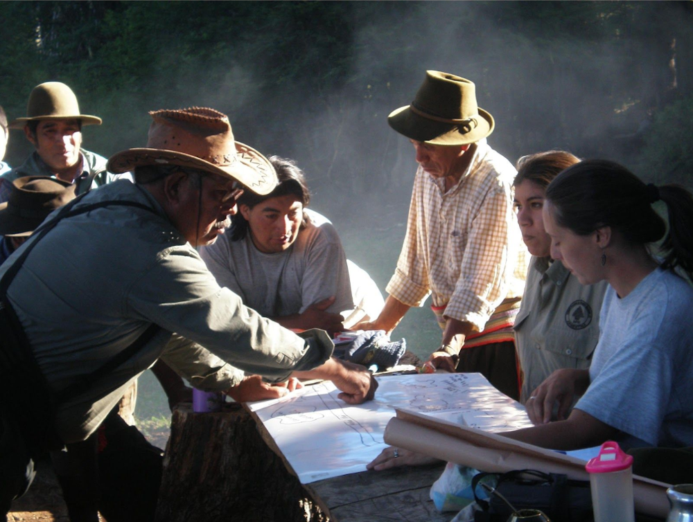
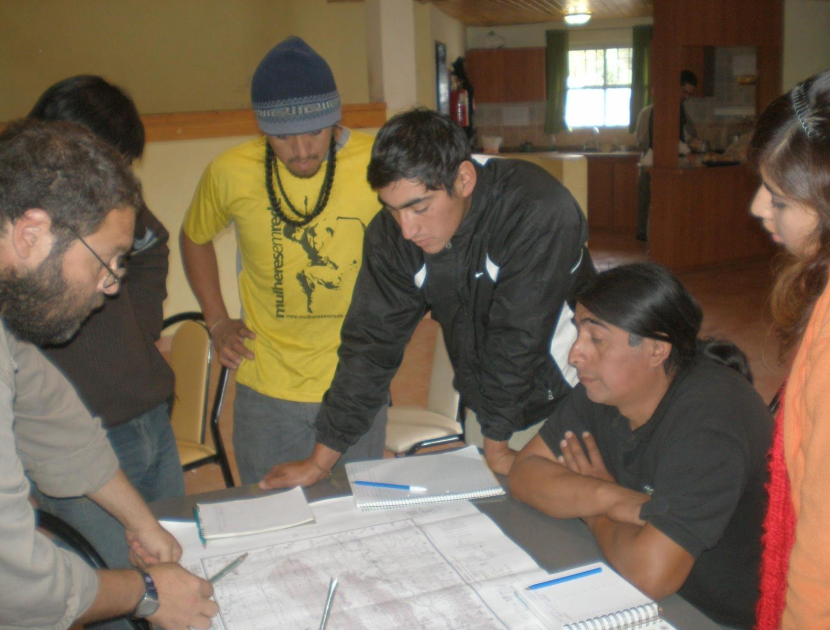
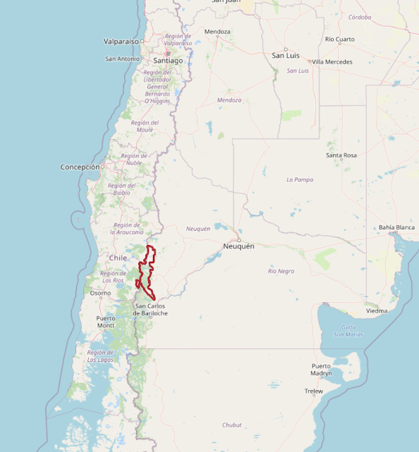
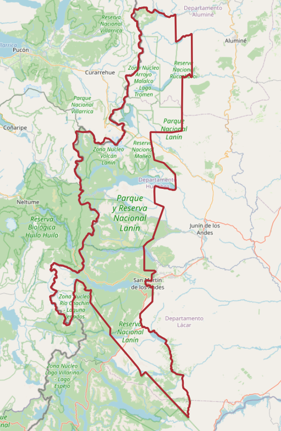
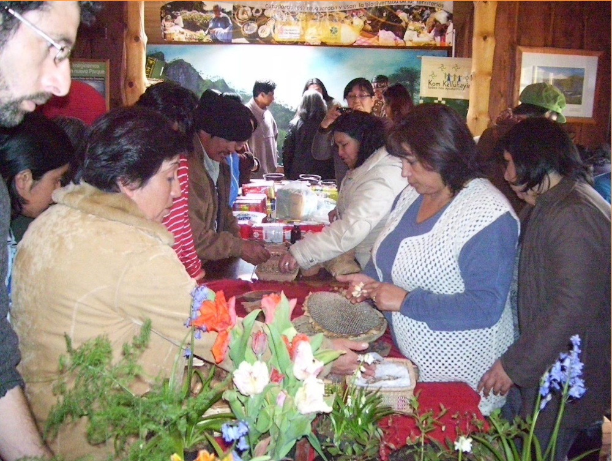

Pro Patagonia es una Organización No Gubernamental (ONG), conformada por un grupo de técnicos y profesionales que trabajamos en diversos temas y desde diferentes ámbitos, con las Comunidades Mapuche de la zona sur de la provincia de Neuquén y pobladores rurales en general.
Nos constituimos el día 7 de agosto de 1995, bajo la forma de Asociación Civil sin Fines de Lucro. Personería Jurídica 948/96.
Nuestra Misión es “Construir y apoyar procesos de organización del campo popular, tendientes al desarrollo local”.
Los objetivos se enuncian en el artículo segundo del Estatuto, que transcribimos a continuación:
"Son sus propósitos estimular, difundir y apoyar acciones de desarrollo social y promoción humana en el marco de la gestión sustentable de los recursos naturales, en comunidades de pueblos originarios y criollas, del medio rural o urbano fundamentalmente de Neuquén y de la Patagonia e Instituciones ligadas al desarrollo social y a la gestión de los recursos naturales para lo cual podrá prestar servicios técnicos de asesoramiento; contribuir en terreno a la realización de programas oproyectos de desarrollo social, promoción humana y gestión ambiental; promover las investigaciones necesarias vinculadas con el tema; organizar y apoyar acciones de capacitación a distintos niveles contribuyendo a la formación de recursos humanos; promover la autogestión, estimular la difusión y un mayor conocimiento de los temas de política social y ambiental ..."


Producción Sustentable / Planificación territorial Soberanía Alimentaria Economía solidaria Educación ambiental y espacios sociales
Asociación Civil Pro Patagonia Personería Jurídica 948/96 Sarmiento 396 (C.P. 8370) S.M. Andes - Neuquén – Argentina Te-Fax: 54-02972-422129 E mail: [email protected] http://www.propatagonia.org.ar



